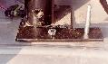

Following is the procedure that I created to mount a 4 ft high lift jack directly behind the rear seat perched on the wheel wells. Most of this is common sense and you may wish to modify to your wishes...however this gives you the idea. The nice thing about this is that is "rollover proof" and it out of the elements and occupies space otherwise wasted.
Extra's: I drilled a hole through my "add-a-trunk" and ran a hex head bolt through it with a wing nut on the inside. I could then lock the gate and therefore secure the jack.
My objective was to get the jack as close to the rear seat as possible. Here is what I did:
 Mark flat stock with f/r markings (so you can follow me). Drill a 1/4" hole (centered) about 3" from the edge of the flat stock. This will be where you reinstall the longer roll bar bolt. Drill another 1/4" hole (centered) about 1" from the front side for the 3" hex head bolts.
 Run the 3" hex head bolts through the front holes of the flat stock
and install them so the head is down. Use the hex head bolts to secure
the flat stock to the roll bar with the head up. The bolt going into
the rollbar holds the bolt head tight against
the fender (you may want to put a thin piece of rubber to prevent
squeaks). Replace the carpet and cut a small hole to allow the
bolt to protrude through the carpet.
Run the 3" hex head bolts through the front holes of the flat stock
and install them so the head is down. Use the hex head bolts to secure
the flat stock to the roll bar with the head up. The bolt going into
the rollbar holds the bolt head tight against
the fender (you may want to put a thin piece of rubber to prevent
squeaks). Replace the carpet and cut a small hole to allow the
bolt to protrude through the carpet.
Take the base off the jack and install the jack with the handle toward the rear of the Jeep (the top of jack will be on passenger side). Put the driver's side bolt through the bottom of the jack and the passenger side bolt through the top of the jack. You'll see how neat it mates up when you do it. Slide the small washers down first, then slide on a large washer, then screw down the wing nut.
You're finished! I've put rubber on the handle and zip tied it to keep it quiet.


{kind=link}